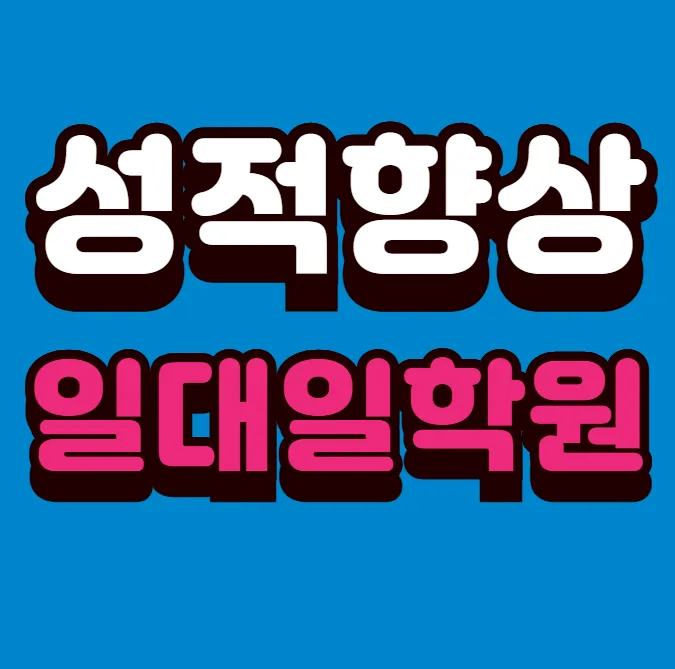

첫 번째 단계에서는 주변 환경을 직접 눈으로 확인해요. 두 번째 단계에서는 교육 철학과 커리큘럼을 비교해요. 셋째로는 강사진의 경력과 전문성을 체크해요. 이때 금암마을 고등 수학학원 방문 시 체험 수업을 신청해 보는 것이 도움이 돼요. 또한 수강료 구조와 추가 비용을 투명하게 파악해요. 마지막으로 학부모와 학생들의 후기와 만족도를 조사해요. 금암마을에서는 다양한 금암마을 고등 수학학원 옵션이 공존하니 선택 폭이 넓어요. 최종 결정 전에는 목표와 맞춤형 프로그램을 재검토해 보는 것을 권장해요.
주거 환경이 안정된 이 지역은 초등 저학년이 생활 리듬을 잡기에 좋은 분위기를 제공해요. 초등 고학년은 학습량이 늘어나면서 자기주도 관리 능력이 요구돼요. 중학생은 시험 대비 전략과 시간 관리가 핵심이며, 고등학생은 심화 문제 해결 능력이 중요해요. 전체 학년은 방학 중 보강 수업이 활발히 운영돼요
와와학습코칭센터는 개인 맞춤형 과제 피드백을 중점으로 수업을 진행해요. 강사는 학생이 제출한 과제마다 구체적인 코멘트를 제공해 스스로 오류를 찾고 개선하도록 돕습니다. 주요 대상은 학습 습관 형성이 필요한 초중고 학생이며, 교과서 지문을 활용한 문장 재배열 게임으로 독해력을 강화합니다. 커리큘럼은 기본 개념 이해 응용 문제 풀이 실전 모의고사 순으로 구성돼요. 특히, 바이올린 초급 과정은 200,000원, 중급 과정은 220,000원으로 책정돼 있어 경제적 부담을 최소화합니다. 이런 구조 덕분에 학생이 학습 과정 전반에 걸쳐 자신감을 유지하면서 꾸준히 성장할 수 있습니다.
| 학원명 | 지역 맞춤 학원 |
| 수강료 | 바이올린(초급) 200,000원 | 바이올린(중급) 220,000원 |
CURRICULUM
이곳의 커리큘럼은 시험 일정에 맞춰서 역순으로 복습하는 방식을 운영해요. 시험 전날에는 모의고사를 한 번씩 진행해서 실전 감각을 익히게 하거든요. 타 금암마을 고등 수학학원에서는 학부모의 참여를 막는 경우도 있지만, 여기서는 함께하는 교육을 지향해요. 학부모님이 아이의 진도를 이해하고 도울 수 있도록 돕는 편이에요. 아이가 알고 있는 것과 모르는 것을 구분해서 모르는 것부터 우선적으로 학습하도록 유도해요. 이런 방식을 통해 시간을 낭비하지 않고 효율적으로 성적을 올릴 수 있는 구조로 짜여 있어요. 아이가 자신의 약점을 정확히 알고 보완하는 과정을 통해 학력이 향상되는 것을 경험할 수 있어요.
학생들은 금암마을 고등 수학학원 선택 단계에서 과도한 기대와 실제 교육 내용 차이로 실망을 겪는 경우가 있어요. 등록 후에는 수업 진행 방식에 대한 이해 부족으로 참여도가 떨어지는 경우가 많아요. 학습 관리 단계에서는 복습 주기가 불규칙해 성취도가 유지되지 않는 문제가 나타나요. 이러한 실수를 예방하려면 체계적인 정보 확인과 지속적인 피드백이 필요해요
와와금암마을 고등 수학학원의 학습 전략은 학생이 수업을 기다리게 만드는 설계에 초점을 맞추고 있어요. 루틴을 체계화해 매일 일정한 학습 패턴을 형성하고, 이를 통해 만족도와 성취 수준이 동시에 상승해요. 특히 좌표평면 상의 도형 문제를 시각화하고, 이해가 부족한 부분을 별도 모아 분석하는 과정을 도입해요. 이런 분석 기반의 피드백이 학습 효율을 크게 끌어올려요.
고등학교 2학년으로 필기 능력은 뛰어나지만 자기 주도 학습 계획이 부족한 학생에게 특히 효과적이에요. 학습량보다 효율을 중시하는 학생이 목표 달성에 어려움을 겪을 때, 체계적인 일정 관리와 피드백을 통해 성과를 끌어올릴 수 있어요. 금암마을 주변 학부모들이 자주 추천하는 이유는 바로 이런 맞춤형 지원 때문이에요.
아이의 질문에 단순 답변을 넘어 심화 설명까지 연결해 주는 순간이 정말 감동적이에요. 시험 전 스케줄표를 제공해 주니 준비가 체계적으로 이루어져 큰 도움이 돼요. 오답 노트를 꾸준히 쓰게 하니 실수가 성장 기회로 바뀌는 느낌이에요. 선생님이 아이의 학습 리듬을 파악하고 맞춰 주는 덕분에 자율 공부 시간이 늘어났어요. 마지막으로, 주말 집중 보강 수업이 실제 시험과 비슷한 문제로 구성돼 있어 실전 감각을 키우는 데 효과적이에요.

| 학원명 | 와와학습코칭학원 |
| 등록번호 | 제3918호 |